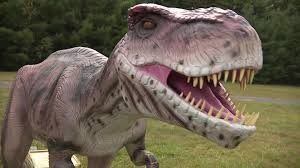
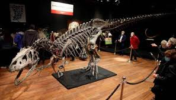
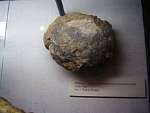
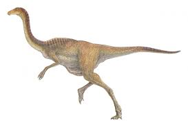

T-Rex
Энэ бол үлэг гүрвэл юм. Мөн энэ нь түүний байсан төрлүүдийн зөвхөн нэг нь юм. Маш олон төрөл байдаг бөгөөд тэд бүгд бие биенээсээ ялгаатай. Таны одоо харж байгаа зүйл бол Т рекс юм. Энэ бол урьд өмнө байгаагүй хамгийн хүчтэй үлэг гүрвэлийн махчин амьтан юм.

Go to next
Bones
65 сая жилийн өмнө үлэг гүрвэлүүд устаж үгүй болсон бөгөөд тэдгээрийн яс нь дэлхий дээр олджээ. Араг яс түүх өгүүлнэ. Үлэг гүрвэлийн эрүүний яс, шүд нь тэд юугаар хооллодог байсан тухай хэлж өгнө. Эвэр нь тэд биеэ хэрхэн байсныг харуулна. Үлэг гүрвэлүүдийг аарцагны ясны бүтцээр нь 2 үндсэн бүлэгт хуваана. Зарим нь гүрвэлийнх шиг, зарим нь шувууных шиг аарцагтай байдаг.

Go to next
Egg
1900-аад онд үлэг гүрвэлийн өндөг хүртэл олдсон ч үнэхээр ховор байсан. Гэхдээ одоо энэ нь хэд хэдэн тивд олддог. Үлэг гүрвэл ихэнх мөлхөгчдийн адил өндөглөнө. Зарим үлэг гүрвэл сайн асрагч, эцэг эх байдаг. Харин зарим нь өндгөө гаргаад л орхичихдог тул үр зулзага нь зөнгөөрөө өсөж торнидог. Гэхдээ бас олонх үлэг гүрвэл зассан үүрэнд өндөглөнө. Зарим нь газар хонхойлгох төдий маш энгийнээр зассан үүртэй байхад нөгөө хэсэг нь шавраар хийсэн байдаг. Тэдний өндөгний хальс нь шувууныхтай адил хэврэг агаад зулзгалан үлэг гүрвэл хальсаа өөрдөө хагалан гарч ирдэг.

Go to next
Speed
Ихэнх үлэг гүрвэлүүд болхи хөдөлгөөнтэй мэтээр төсөөлөгдсөөр иржээ. Дөрвөн хөллөсөн, хүнд тавхайтай үлэг гүрвэлүүд аажим, удаан хөдөлгөөнтэй байдаг ч хурдан шаламгай нь бас байжээ. Тэмээн хяруулыг санагдуулам хоёр хөл дээрээ явдаг Орнитомимидын төрөл хамгийн хурдан нь юм. Бас Галлимимус гэдэг нэртэй үлэг гүрвэл нь цагт 70 км буюу уралдааны морьдоос ч илүү хурдан амьтан байжээ. Мэдээжийн хэрэг, тэд бүгд өөр өөр хурдтай байсан. Галлимимус гэдэг нь "тахиаг дуурайх" гэсэн үг бөгөөд тэрээр хамгийн хурдан үлэг гүрвэл байсан байх боломжтой. Тэдний бие хөнгөн, урт хөлтэй учир араатан амьтнаас хурдан амиа авардаг. Галлимимус нь тэмээн хяруулын адилаар хол хол үсрэн гүйхэд зохицсон хүчирхэг хөлтэй. Тэмээн хяруулаас ялгаатай нь түүнд тэнцвэрээ олоход тусалдаг урт сүүл байсан билээ.

Go to next
Цаг гаргасанд баярлалаа!